Página Inicial
Pontuações
Entrar
Sair
Bem vindo as estatísticas do quiz!
Aqui você pode ver acertos e erros tanto individuais como gerais
Informações individuais:

Informações individuais:
Gráfico dos acertos e erros totais de
:
Informações gerais:
informações gerais:
Gráfico dos acertos e erros gerais:
Gráfico dos acertos e erros gerais:

 Sair
Sair